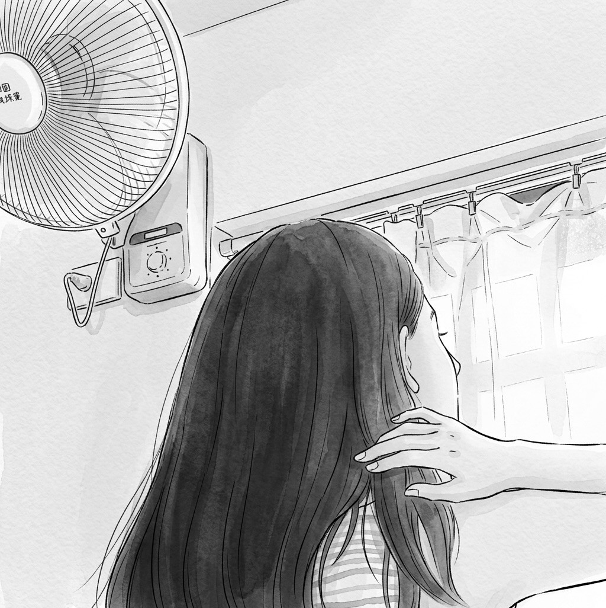
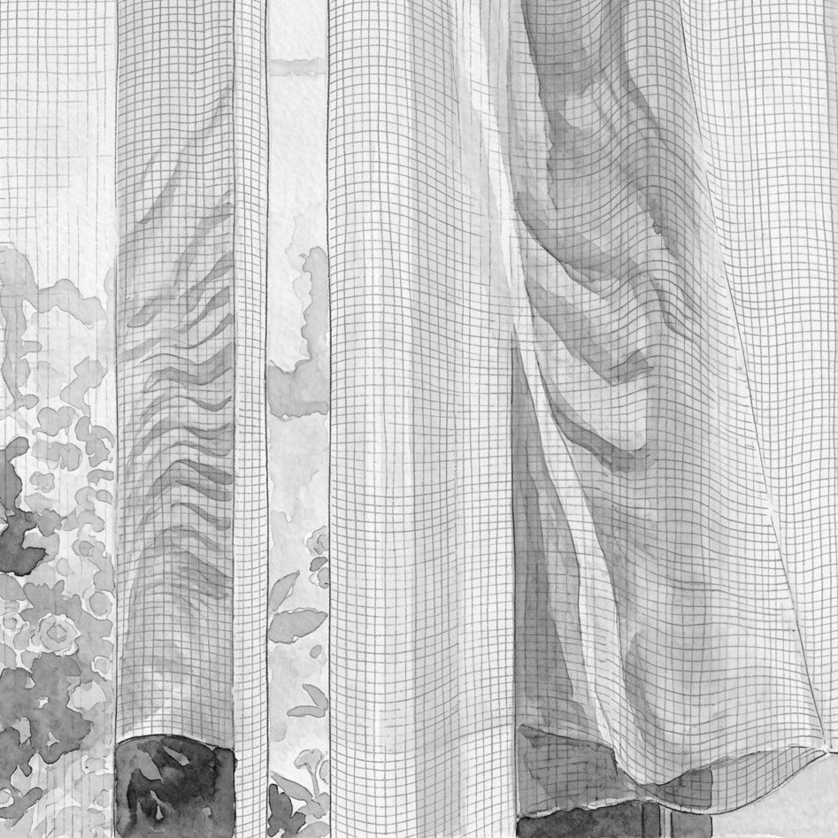
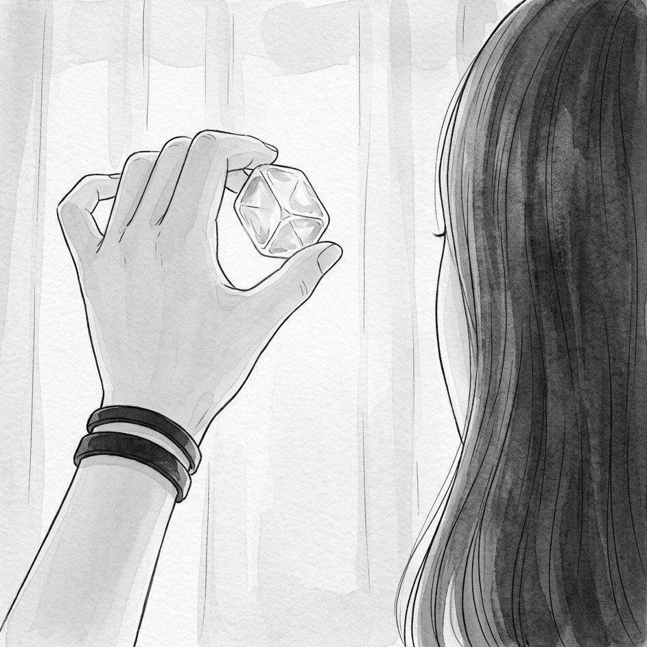

01
悶熱
午後三點，電風扇轉了又轉，屋裡的熱氣還是散不去。她撥開黏在脖子上的頭髮，望向窗外刺眼的光。

02
電話
電話響了。另一頭的聲音說了很久，她只是低著頭聽，一句話也沒有說。

03
窗簾
掛上電話之後，房間安靜下來，只剩窗簾被風一下一下推動，像在替她呼吸。

04
冰塊
她拿起一顆冰塊，舉到光下。透明、有稜有角，像一句還來不及說出口的話。

05
掌心
冰塊在掌心慢慢融化。涼意一點一點滲進皮膚，也一點一點從指縫間流走。

06
冰箱
她打開冰箱，伸手往最深處找。也許還剩下一些什麼，足夠撐過這個夏天。